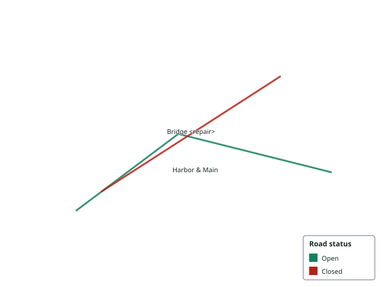

This page has no OpenGeo runtime dependency. It consumes the stored render through a standard HTML image element.

Expected SHA-256: 50d56cb3db2da34e14fcb0db1921e54b7fff086e4aba0716ea3fb00d58e80b9a
50d56cb3db2da34e14fcb0db1921e54b7fff086e4aba0716ea3fb00d58e80b9a